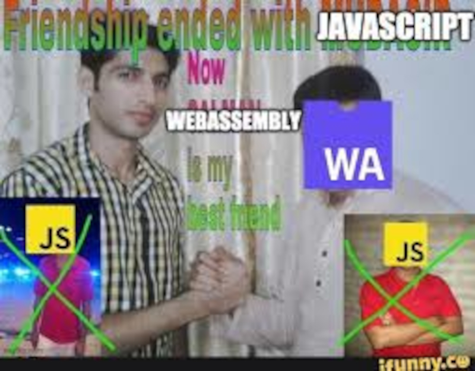

Презентация Wasm
выполнил студент -> Минниахметов Р.Н
21ИСР
WebAssembly (аббревиатура Wasm) это набор бинарных инструкций для стэковой машины. Wasm создан как портативная среда для языков програмированния, позволяющая размещать себя на клиенте или сервере.
Не интересные факты
Парадигма - Стэковая машина
Разработан - W3C
Создан
W3C
Mozilla
Microsoft
Google
Apple
Первое издание - март 2017
OS - Platform independent
License - Apache License 2.0
расширения файлов .wat (text) .wasm (binary)
сайт webassembly.org
Influenced by asm.js PNaCl Lisp

Введение

каждый процессор выполняет свой набор инструкций
Wasm особенный

В отличии от других языков ассемблера он работает где угодно, без изменений
asm.js предок wasm
asm.js это подмножество JavaScript разработанный для языков с возможностью управлять памятью
и встраиватся в веб приложения
отличается от js наличием типов (добовляются по средствам дизъюкции, либо массива)
Designed by Mozilla
первая версия 21 March 2013; 11 years ago
OS Platform independent
сайт asmjs.org
AssemblyScript
так же стоит упомянуть, компилятор позволяет TypeScript компилировать в Wasm
Хватит говорить компилируем Си.
Простейшая программа
code
#include < stdio.h >
int main(void){ printf("HELLO WEB!");}
emcc command
> emcc hello.c -o hello.js
вот результат
emscripten создаёт два файла это a.out.js и a.out.wasm. второй это WebAssembly файл содержащий скомпилированый код, а первый это javascript файл создающий runtime для wasm'a
#include <stdio.h>
#include <emscripten.h>
EMSCRIPTEN_KEEPALIVE
int add(int first, int second)
{
return first + second;
}
EMSCRIPTEN_KEEPALIVE
int main()
{
}
команда которой мы собрали это
> emcc add.c -o add.js -s NO_EXIT_RUNTIME=1 -s EXPORTED_RUNTIME_METHODS=[ccall]
декомпилируем
> emcc simplest.c -c -o hello.o
> wasm-decompile hello.o
import memory env_linear_memory;
import table env_indirect_function_table:funcref;
data L_str(offset: 0) = "HELLO WEB!\0a\00";
import function env_printf(a:int, b:int):int;
function original_main():int {
var a:int = 0;
var b:int = 0;
env_printf(a, b);
var c:int = 0;
return c;
}
function main(a:int, b:int):int {
var c:int = original_main();
return c;
}
что внутри .wasm?

как работает этот байт код?
00 61 73 6d 01 00 00 00 |.asm....|
(Module)
00 61 73 6d 01 00 00 00 01 07 01 60 02 7f 7f 01 |.asm.......`....|
7f 03 02 01 00 0a 09 01 07 00 20 00 20 01 6a 0b |.......... . .j.|
(module
(func $add (param $A i32) (param $B i32) (result i32)
local.get $A
local.get $B
i32.add
))
00 61 73 6d 01 00 00 00 01 07 01 60 02 7f 7f 01 |.asm.......`....|
7f 03 03 02 00 00 0a 11 02 07 00 20 00 20 01 6a |........... . .j|
0b 07 00 20 00 20 01 6b 0b |... . .k.|
(module
(func $add (param $A i32) (param $B i32) (result i32)
local.get $A
local.get $B
i32.add )
(func $sub (param $C i32) (param $D i32) (result i32)
local.get $C
local.get $D
i32.sub ))
0b 07 00 20 00 20 01 6b 0b
Зачем?

все яндекс игры написаные на unity, все сложные приложения по типу Figma работающие в браузере
используют wasm для вычислений на стороне клиента.
также wasm применяют на стороне сервера для запуска llm в онлайн компиляторах (см. WasmEdge)
вот игра на юнити